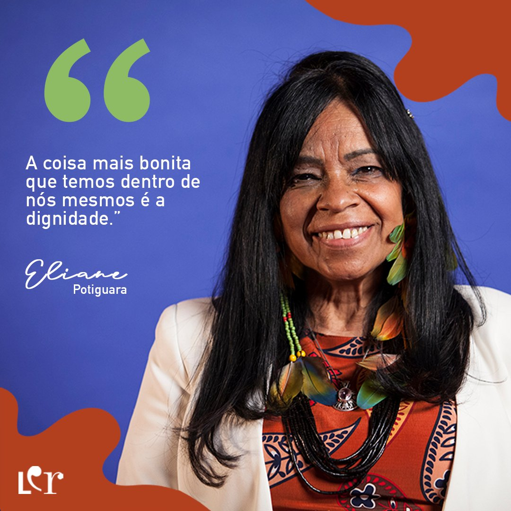

Quem é?
Eliane Lima dos Santos, conhecida por Eliane Potiguara, Eliane Potiguara é uma escritora,poeta, professora,
empreendedora social e ativista indígena que tem dedicado sua vida à preservação e promoção da cultura e
dos direitos dos povos originários do Brasil. Eliane é uma mulher indígena da etnia Potiguara, originária
do estado da Paraíba, no nordeste do Brasil.
Ela é fundadora da primeira organização de mulheres indígenas no país (GRUMIN/Grupo Mulher-Educação Indígena)
e coparticipante da criação e evolução do Movimento Indígena Brasileiro. Também foi eleita uma das 10 mulheres
do ano no Brasil (1988), participou da elaboração da Declaração Universal dos Direitos Indígenas na ONU em
Genebra, recebeu o título de Cidadã Internacional pela Comunidade Bah’ai, é escritora e foi premiada pelo Pen
Club da Inglaterra pelo seu livro A Terra é a Mãe de Índio. Além de ser embaixadora da Paz pelo Círculo de poetas
e escritores da França e Suiça.

Referências:
https://www.ufrb.edu.br/bibliotecacecult/noticias/388-celebrando-a-literatura-feminina-eliane-potiguara-guardia-das-tradicoes-indigenas#:~:text=Eliane%20%C3%A9%20uma%20mulher%20ind%C3%ADgena,Para%C3%ADba%2C%20no%20nordeste%20do%20Brasil.
https://enciclopedia.itaucultural.org.br/pessoa641360/eliane-potiguara